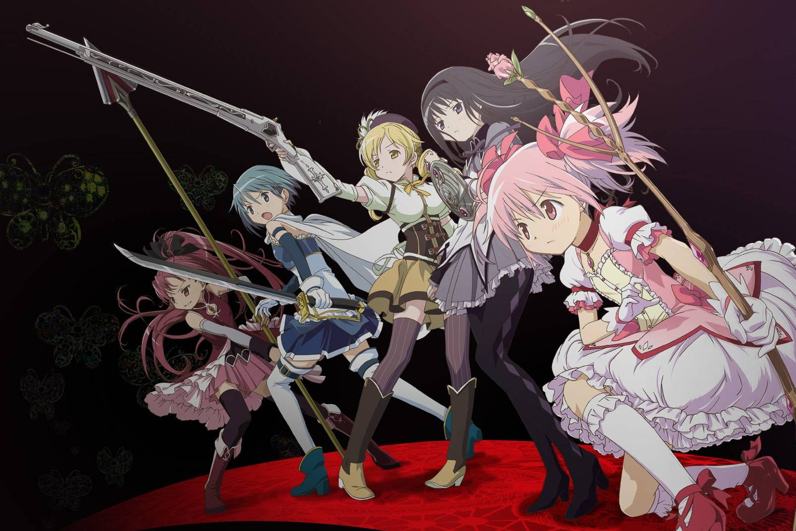

🌸 Madoka Kaname
Edad: 14 años
Madoka es una estudiante de segundo año de secundaria. Es amable, sensible y se preocupa mucho por sus amigas.
Una historia de magia, deseos y destinos

Puella Magi Madoka Magica es una serie japonesa de chicas mágicas que combina fantasía, drama y misterio. La historia presenta un mundo donde los deseos y las decisiones pueden tener consecuencias inesperadas.
Madoka Kaname es una estudiante de segundo año de secundaria que lleva una vida aparentemente normal junto a sus amigas. Todo cambia cuando conoce a una misteriosa estudiante transferida llamada Homura Akemi y a una criatura llamada Kyubey.
Kyubey ofrece a las jóvenes la posibilidad de cumplir un deseo a cambio de convertirse en chicas mágicas y luchar contra las brujas. A partir de ese momento, Madoka comienza a descubrir que este mundo mágico es mucho más complejo de lo que imaginaba.
Esta página contiene información general de la historia.
Edad: 14 años
Madoka es una estudiante de segundo año de secundaria. Es amable, sensible y se preocupa mucho por sus amigas.
Edad: 14 años
Homura es una estudiante transferida de personalidad reservada. Su relación con Madoka es uno de los elementos centrales de la historia.
Edad: 14 años
Sayaka es amiga y compañera de clase de Madoka. Tiene una personalidad alegre, activa y decidida.
Edad: 15 años
Mami es una estudiante de tercer año y una chica mágica con experiencia. Tiene una personalidad amable y suele cuidar a las demás.
Edad: 14 años
Kyoko es una chica mágica que llega desde otra ciudad. Tiene una personalidad directa y suele llevar comida consigo.
Fecha original de estreno: 6 de octubre de 2012.
Recopila y presenta la primera parte de la historia de la serie.
Fecha original de estreno: 13 de octubre de 2012.
Continúa la historia presentada en la primera película y concluye la adaptación cinematográfica de la serie.
Fecha original de estreno: 26 de octubre de 2013.
Es una historia original que continúa los acontecimientos de la serie y las dos primeras películas.
Estreno oficial en Japón: 28 de agosto de 2026.
Para Chile, esta página destaca su estreno el 1 de octubre de 2026.
NUEVA PELÍCULA